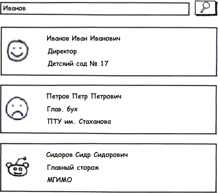

еще проще чем ReactJS
Николай Смирнов / @nickolaysm
Нужно хотя бы понимать ReactJS
Желательно иметь опыт реализации
Бытует мнение, что Flux не самая простая идея.
Хе-хе
Бред какой-то
Flux - это очень просто и эффективно
Нужно только слегка моск подкорректировать
Это не:
Это чистый разум - паттерн
Предложен фейсбуком
Да почти ничего нет!!!
Есть только
мегамощный
и мегапростой
инструмент для отрисовки интерфейсов, т.е. view
Что уже не мало!
Под ReactJS очень красиво ложатся реактивные
кто бы сомневался
и функциональные подходы, паттерны, способы разработки
только и можно разрабатывать интерфейсы.
Все эти MVC, MVP подогнанные под императивные языки - очень УБОГИ
ваще ИМХО, т.е. совсем ИМХО
Грамотная работа с данными
* данные в ReactJS это все - поведение, изменение, внешний вид
Список сотрудников с фильтрацией
Нужен для централизации всех событий и подписчиков
import { Actions } from 'flummox';
class ActionEmployee extends Actions {
filter(filter){
return ... Можно вернуть значения или Promise
}
loadEmployee(id){
return ... Можно вернуть значения или Promise
}
saveEmployee(employee){
return ... Можно вернуть значения или Promise
}
}
import { Store } from 'flummox';
class StoreEmployee extends Store {
constructor(flux) {
super();
const actions = flux.getActions('action');
this.register(actions.filter, this.handleFilter);
this.state = { employees : [] };
}
handleFilter(message) {
console.log("handleFilter", message);
this.setState({
employees : message
});
}
}
import {Flux} from 'flummox';
import FluxComponent from 'flummox/component';
import ActionEmployee from "./Action.jsx";
import ApplicationStore from "./Store.jsx";
class ApplicationFlux extends Flux {
constructor() {
super();
this.createActions('action', ActionEmployee);
this.createStore('store', ApplicationStore, this);
}
}
import React from 'react';
import FluxComponent from 'flummox/component';
import flux from './app.jsx'
class View extends React.Component {
render() {return (
<FluxComponent flux={flux} connectToStores={['store']}>
<ViewEmployeeCounter/>
</FluxComponent>
<FluxComponent flux={flux} connectToStores={['store']}>
<ViewEmployeesFilter/>
<ViewEmployees/>
</FluxComponent>
);}
}
import React from 'react';
var ViewEmployees = React.createClass({
load : function(){
this.props.flux.getActions('action').filter();
},
render: function() {
var emps = this.props.employees.map(function(item){
return(<div key={item.uuid}> {item.name} </div>)
});
return (
<div className="grid">
<div onClick={this.load}>Показать Сотрудников</div>
{emps}
</div>)
}
...
var ViewEmployeeCounter = React.createClass({
render: function() {
console.log("ViewEmployeeCounter");
return (
<span>{this.props.employees.length}</span>
);
}
})
var ViewEmployeesFilter = React.createClass({
keyPress: function(event) {
if(event.keyCode == 13)
this.props.flux.getActions('action')
.filter({text: event.target.value});
},
render: function() {
console.log("ViewEmployeesFilter");
return (
Фильтр:
<input type="text" onKeyUp={this.keyPress}/>
);
}...
Flux для глупых людей - http://habrahabr.ru/post/249279/
более чем достаточно